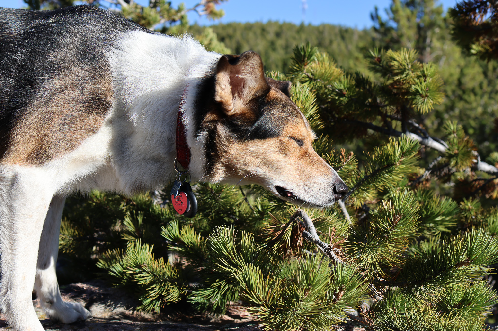

Blog
Status of the website
There are several known issues with the website right now.
- Gallery page
- The pop-up large images in the overlay are not centering correctly. Suspect that this is an issue that can be resolved purely with CSS.
- Accessibility issue for keyboard only users after clicking on an image. Preserving focus for keyboard only operation would enable users to activate an image and leave without mouse use.
- Sidebar gradient - All other pages
- I'm trying to get the sidebar gradient found on the home page to also look good on the other pages, but on long pages it will not fill the entire vertical length of the page.
Hiking session with Miss Luna!
August 29, 2026
Miss Luna and I had a wonderful hike this afternoon. With the worst of the recent heat dome past us, August on Casper Mountain offered a pleasant escape from the summer heat. We started at Rotary Park and took a quick walk up to the falls. Even with the recent few rainstorms, the falls were a disappointing trickle.
From there, we hiked about half of the Bridle Trail up to Split Rock. The drought has been really rough on the vegetation this year and it is concerningly dry. The steep opening climb on the western side of the ravine highlighted how the grasses and wildflowers have been wilted and crisped under this summer's non-stop heat. There were disappointingly few flowers and absolutely no mushrooms to speak of. A bit of a bust as far as macro subjects go.
Once we got to the canopy, it cooled off a fair bit but even then the evidence of this years drought forced itself upon us. The trail was dustier than ever. Almost no wildlife to speak of, except for a single grouse that stubbornly refused to cooperate as a photo subject.
Luna didn't mind though. The lack of compelling photo subjects meant she didn't have to wait for dad to fiddle around with his camera every few minutes.

Sometimes the weather is fickle.
August 22, 2026
Sometimes you encounter an amazing storm, don't have your camera on you because you were busy doing something else, and then when you finally get your camera set up... Mother Nature decides to act like Lucy with the football.
I just need everyone to trust me, the storm north of Casper this evening was one of the most picturesque storms I've been lucky enough to witness. Photogenic lightning that boldly contrasted against the supercell cloud structures. A beautiful golden hour sunset illuminating the western half of the cloud bank. Five to ten lightning strikes a minute. A little slice of heaven for a storm photographer.
By the time I got my camera set up - nothing. Some days we just have to be content to live with memories.